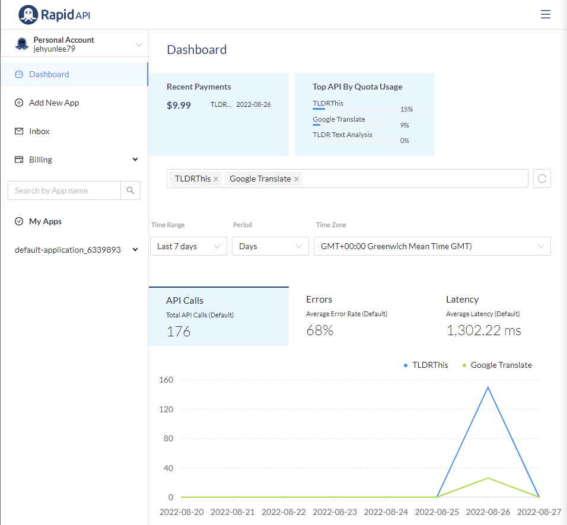
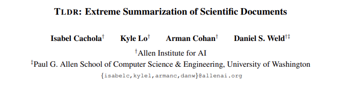
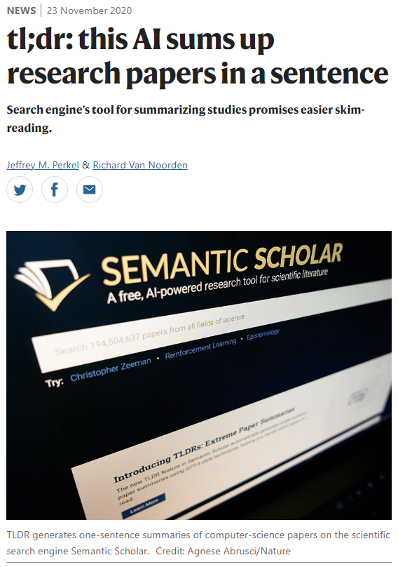
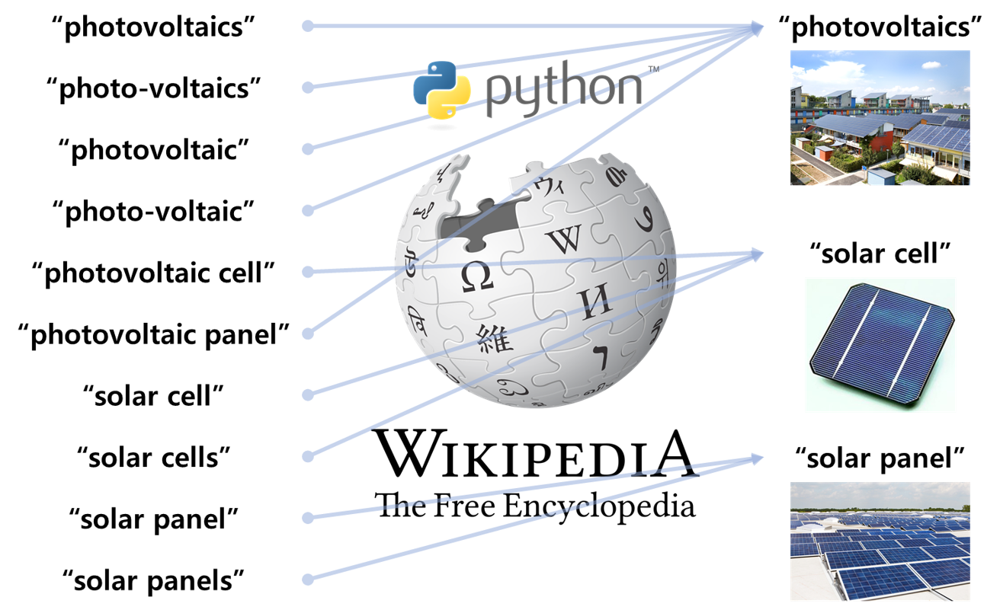
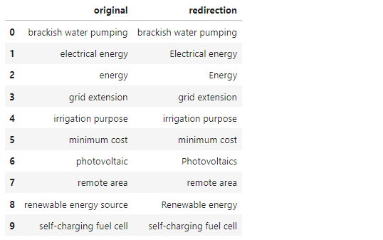
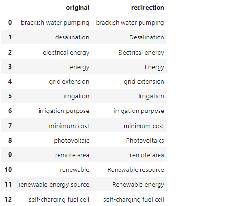
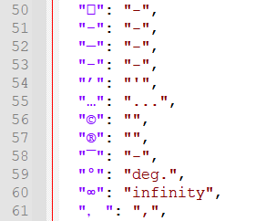

- 자연어 처리는 품이 많이 듭니다.
- 단어부터 문장, 맥락까지 처리할 것이 한 두 가지가 아닙니다.
- 그러면서도 반복이 많습니다. 함수로 만듭니다.
초록 요약 및 키워드 추출
- 우연히 시작한 문헌 분석 일이 형태를 갖춰 갑니다.
- 주먹구구로 시작했던 일을 체계적으로 정리하고자 합니다.
- 무엇보다, 결과물의 수준을 높이고자 합니다.
- 본 글의 내용은 지난 학회 발표를 자세히 설명한 것입니다.
- 이 코드를 활용하시고자 하는 분들은 다음과 같이 인용해 주시기 바랍니다.
이제현, 유시현, 김창기, 김현구, “Open API를 활용한 고속 논문 분석”, 실용인공지능학회지 vol.1 p.9, 2022
- 여러 라이브러리를 호출할 것입니다. 노트북에 구축한 개인 환경에서 다음과 같은 라이브러리를 사용했습니다.
1
2%load_ext watermark
%watermark -v -p numpy,pandas,matplotlib,seaborn,spacy,pytextrank,keybert - 실행 결과
1
2
3
4
5
6
7
8
9
10
11Python implementation: CPython
Python version : 3.7.4
IPython version : 7.23.1
numpy : 1.19.5
pandas : 1.3.5
matplotlib: 3.5.2
seaborn : 0.11.0
spacy : 3.0.8
pytextrank: 3.2.4
keybert : 0.6.0
RapidAPI dashboard
RapidAPI: TLDRThis
RapidAPI: Google Translate
Naver Cloud Platform: Papago Translation
- RapidAPI를 사용해 논문을 요약하고 번역했습니다.
- TLDRThis로 요약하고 Google Translate로 번역했습니다.
- 지난번처럼 네이버 파파고를 쓰려고 했지만 연구원에서 ncloud.com이 차단 대상이라 합니다.
- RapidAPI dashboard에서 활용 현황을 볼 수 있습니다. 업무의 일환이라 연구비로 결제했습니다.

1.문헌 데이터 추출
Pega Devlog: Citation Network on Scopus Data
Pega Devlog: Words Co-occurence in Academic Literatures
Pega Devlog: Paper Search usig ScopusAPI
Rezk et al, “Fuel cell as an effective energy storage in reverse osmosis desalination plant powered by photovoltaic system”, Energy (2019), doi: 10.1016/j.energy.2019.02.167
scopus API를 활용해 문헌 데이터를 추출하는 방법은 여러 글에서 언급했으니 넘어갑니다.
df라는 이름의 데이터 프레임으로 받아왔다고 치고 여기부터 시작합니다.테스트에 사용한 논문은 Rezk et al, “Fuel cell as an effective energy storage in reverse osmosis desalination plant powered by photovoltaic system”, Energy (2019), doi: 10.1016/j.energy.2019.02.167 입니다.
1
2abstract = df["description"].iloc[i]
abstract실행 결과
1
'A hybrid renewable energy systems (HRESs) comprises of photovoltaic (PV), and self-charging fuel cells (SCFC) is designed for securing electrical energy required to operate brackish water pumping (BWP) and reverse osmosis desalination (RO) plant of 150 m3 d-1 for irrigation purposes in remote areas. An optimal configuration of the proposed design is determined based on minimum cost of energy (COE) and the minimum total net present cost (NPC). Moreover, a comparison with a stand-alone diesel generation (DG) or grid extension is carried out against the optimal configuration of PV/SCFC HRES. The modeling, simulation, and techno-economic evaluation of the different proposed systems, including the PV/SCFC system are done using HOMER software. Results show that PV array (66 kW), FC (9 kW), converter (25 KW) –Electrolyzer (15 kW), Hydrogen cylinder (70 kg) are the viable economic option with a total NPC of $115,649 and $0.062 unit cost of electricity. The COE for the stand-alone DG system is 0.206 $/kWh, which is 69.90% higher than that of the PV/SCFC system. The PV/SCFC system is cheaper than grid extension. This study opens the way for using a fuel cell as an effective method for solving the energy intermittence/storage problems of renewable energy sources.'
다른 데이터도 서지 정보에서 가져옵니다.
1
2
3
4
5
6title = df["title"].iloc[i]
journal = df["publicationName"].iloc[i]
authors = df["author_names"].iloc[i]
affiliations = df["affilname"].iloc[i]
date = df["coverDate"].iloc[i]
doi = df["doi"].iloc[i]
2. 초록 요약
2.1. 딥러닝 엔진 활용 요약
Cachola et al., “TLDR: Extreme Summarization of Scientific Documents”
Nature: tl;dr: this AI sums up research papers in a sentence
2020년에 출간된 TL;DR논문은 RapidAPI에 구현되어 있습니다.

이 기능을 사용하는 함수를 간단하게 구현합니다. RapidAPI의 API Key를
X_RapidAPI_Key로 저장하고 사용합니다.활용성을 높이기 위해 response 전체를
return합니다.구현된 함수에
abstract를 집어넣고 이 중 요약 부분을 처리하면 다음과 같습니다.1
2
3
4
5
6
7
8
9
10
11
12
13
14
15
16
17
18
19
20
21
22
23
24
25
26# TLDR 활용 요약 함수 구현
def get_tldrthis(webpath, min_length=100, max_length=300, is_detailed=False,
X_RapidAPI_Key=X_RapidAPI_Key):
url = "https://tldrthis.p.rapidapi.com/v1/model/abstractive/summarize-text/"
payload = {
"text": webpath,
"min_length": min_length,
"max_length": max_length
}
headers = {
"content-type": "application/json",
"X-RapidAPI-Key": X_RapidAPI_Key,
"X-RapidAPI-Host": "tldrthis.p.rapidapi.com"
}
response = requests.request("POST", url, json=payload, headers=headers)
return response
# 함수 실행
res = get_tldrthis(abstract)
# 요약 부분 추출, 출력
summary = res.json()["summary"]
print(f"# SUMMARY: {summary}")실행 결과
1
# SUMMARY: A hybrid renewable energy systems (HRESs) comprises of photovoltaic (PV), and self-charging fuel cells (SCFC) is designed for securing electrical energy required to operate brackish water pumping (BWP) and reverse osmosis desalination (RO) plant of 150 m3 d-1 for irrigation purposes in remote areas. The study opens the way for using a fuel cell as an effective method for solving the energy intermittence/storage problems of renewable energy sources.
199 단어(1272 글자)가 68 단어(453 글자)로 줄었습니다. 65%의 압축률입니다.
min_length와max_length,is_detailed등 매개변수를 사용해 길이를 조정할 수 있습니다.
2.2. 독창성 관련 문장 추출
- 논문의 초록에는 크게 두 가지 내용이 담깁니다.
- 첫 번째는 이 연구를 한 이유, 두 번째는 본인들의 독창성입니다.
- 연구를 한 이유는 논문마다 비슷비슷할 수 있습니다. TLDR에서 이 부분만 남긴다면 독창성을 잃어버립니다.
- 독창성에 연관된 문장은 꼼꼼히 볼 필요가 있습니다. 다소 길더라도 그대로 가져오기로 합니다.
- 독창성 관련 문장은
we,in this study등이 사용된 문장으로 판별합니다. - 이 문구가 포함된 문장을 추출해
wesentences라는 이름이 변수에 list 형식으로 저장합니다.1
2
3
4
5
6
7
8
9
10
11
12
13def get_uniqueness(abstract,
wewords=["we ", " our ", "in this ", "carried out", " determined ", " show ", "this study"]):
sentences = [s for s in abstract.split(". ")]
wesentences = []
for s in sentences:
for weword in wewords:
if weword in s.lower():
wesentences.append(s)
return wesentences
wesentences = get_uniqueness(abstract)
wesentences - 실행 결과
1
2
3
4['An optimal configuration of the proposed design is determined based on minimum cost of energy (COE) and the minimum total net present cost (NPC)',
'Moreover, a comparison with a stand-alone diesel generation (DG) or grid extension is carried out against the optimal configuration of PV/SCFC HRES',
'Results show that PV array (66 kW), FC (9 kW), converter (25 KW) –Electrolyzer (15 kW), Hydrogen cylinder (70 kg) are the viable economic option with a total NPC of $115,649 and $0.062 unit cost of electricity',
'This study opens the way for using a fuel cell as an effective method for solving the energy intermittence/storage problems of renewable energy sources.']
- 4개의 문장이 추출되었습니다.
3. keyword 추출
3.1. Author Keywords
- 저자가 논문을 제출할 때 입력한 키워드를 추출합니다.
- 저자가 직접 입력한 만큼 연관성이 매우 높을 것입니다.
- scopus 서지정보에서 곧장 추출합니다.
1
2
3authkeywords = df.iloc[0]["authkeywords"]
keywords_author = authkeywords.split(" | ")
keywords_author - 실행 결과
1
['Desalination deployment', 'Energy', 'Trends', 'Upscaling']
3.2. spaCy + PyTextRank 활용 추출
spaCy
PyTextRank
AnalyticsVisdhya: Keywords Extraction Methods from Documents in NLP
spaCy에 PyTextRank를 얹어서 키워드를 추출합니다.
Textrank 알고리즘이 word graph를 구축합니다. 자주 함께 등장하는 단어들이 있다면 이들 사이의 연결이 강화됩니다.
word graph에 Pagerank 알고리즘이 적용되어 상위 3분의 1이 중요 단어로 분류됩니다. 묶인 단어가 중요하다고 판별되면 통으로 추출합니다.
2단어 이상의 복합어를 추출할 수 있어 매우 유용한 기능입니다.
1
2
3
4
5
6import spacy
import pytextrank
nlp = spacy.load("en_core_web_sm")
nlp.add_pipe("textrank")
doc=nlp(abstract)spacy의"en_core_web_sm"로딩이 되지 않는다면 다음 명령어를 사용해 수동으로 다운받습니다.1
pip install https://github.com/explosion/spacy-models/releases/download/en_core_web_sm-3.0.0/en_core_web_sm-3.0.0.tar.gz
keyword_ngram이라고 이름을 붙인 ngram keyword를 rank와 함께 추출합니다.rank 기준으로 상위 10개만 가져오도록 합니다.
1
2
3
4
5
6
7keywords_textrank = []
keywords_textrank_rank = []
for phrase in doc._.phrases[:10]:
keywords_textrank.append(phrase.text)
keywords_textrank_rank.append(phrase.rank)
keywords_textrank실행 결과
1
2
3
4
5
6
7
8
9
10['minimum cost',
'renewable energy sources',
'electrical energy',
'energy',
'remote areas',
'PV',
'SCFC',
'brackish water pumping',
'irrigation purposes',
'grid extension']
3.2.1. 약어 full name 변환
PV,SCFC라는 약어가 등장했습니다.이들보다는 full name을 사용하는 편이 좋습니다.
abstract에서 이들 단어가 등장한 시점을 찾아 앞에서 문구를 가져옵니다.
and,for등 불용어가 함께 등장할 수 있으므로 이들을 제거합니다.1
2
3
4
5
6
7
8
9
10
11
12
13
14
15
16
17
18
19
20
21
22
23
24
25
26
27
28
29
30
31
32
33
34
35
36
37def get_fullname(keywords, abstract,
stopwords_abb = ["and", "of", "for", "the", "a", "an"]):
abstract_split = np.array(abstract.split(" "))
keywords_fullname = []
for keyword in keywords:
if isinstance(keyword, tuple):
keyword = keyword[0]
# 모두 대문자, 또는 대문자 뒤에 s가 붙은 경우.
# ex) hybrid renewable energy systems (HRESs)
if keyword.upper() in abstract or (keyword[-1]=="s" and keyword[:-1] == keyword[:-1].upper()):
abbword = f"({keyword})"
abbword_len = len(keyword)
# 구두점이 함께 포함된 경우 대응
for abstractword in abstract_split:
if abbword in abstractword:
# 약어 index
abbword_idx = np.where(abstract_split == abstractword)[0][0]
# 전체 용어 후보: 약어 글자 수만큼 앞 단어 추출
fullword_cand = abstract_split[abbword_idx - abbword_len : abbword_idx]
for w in stopwords_abb:
index = np.argwhere(fullword_cand==w)
fullword_cand = np.delete(fullword_cand, index)
fullword = " ".join(fullword_cand)
keywords_fullname.append(fullword)
else:
keywords_fullname.append(keyword)
return keywords_fullname
# 함수 실행
keywords_textrank = get_fullname(keywords_textrank, abstract)
keywords_textrank실행 결과
1
2
3
4
5
6
7
8
9
10['minimum cost',
'renewable energy sources',
'electrical energy',
'energy',
'remote areas',
'photovoltaic',
'self-charging fuel cells',
'brackish water pumping',
'irrigation purposes',
'grid extension']“PV”는 “photovoltaic”으로, “SCFC”는 “self-charging fuel cells”로 변환되었습니다.
초록을 다시 읽으면서 약어에 해당하는 이름을 찾은 것입니다.
3.2.2. 단어 기본형 변환
Machine Learning Knowledge AI Tutorial on SpaCy, Part of Speech POS tagging
약어를 해결하니 새로운 불편이 눈에 띕니다.
“brackish water pumping“이 적절치 않은 것 같습니다.
“irrigation purposes“도 불편합니다.
명사의 복수형을 단수형으로, 동사를 원형으로 변형하는 것을 lemmatization이라고 합니다.
spaCy를 사용해 lemmatization을 실행합니다.1
2
3
4
5
6
7
8
9
10
11
12
13
14
15
16
17
18
19
20
21
22
23
24def get_lemma(keywords, lemma_tags = {"NNS", "NNPS"}):
keywords_lemma = []
lemma_tags = lemma_tags
for keyword in keywords:
if isinstance(keyword, tuple):
keyword = keyword[0]
keyword_lemma = []
for token in nlp(keyword):
lemma = token.text
if token.tag_ in lemma_tags:
lemma = token.lemma_
keyword_lemma.append(lemma)
else:
keyword_lemma.append(lemma)
keywords_lemma.append(" ".join(keyword_lemma))
return list(dict.fromkeys(keywords_lemma)) # 중복 제거
# 함수 실행
keywords_textrank = get_lemma(keywords_textrank)
keywords_textrank실행 결과
1
2
3
4
5
6
7
8
9
10['minimum cost',
'renewable energy source',
'electrical energy',
'energy',
'remote area',
'photovoltaic',
'self - charging fuel cell',
'brackish water pumping',
'irrigation purpose',
'grid extension']lemma_tags에 입력한NNP(noun plural),NNPS(proper noun plural)에 의해 단수와 복수가 정리되었습니다.“blackish water pumping”을 “blackish water pump”로 바꾸려면
VBG(gerund/present participle)도 추가하면 됩니다만 일단은 두기로 합니다.변환 결과를 모니터링하며 POS tagging을 적절하게 조정해야 합니다.
3.2.3. 유의어 표준화: wikipedia 활용
- 결과 중 “photovoltaic”이라는 단어가 있습니다.
- 태양광 발전을 뜻하는 단어인데, 명사로 쓰면 “Photovoltaics”가 맞습니다.
- lemmatization 단계에서 처리할 수도 있겠지만 용어는 문법보다 정확한 단어를 찾아야 합니다.
- wikipedia가 좋은 솔루션이 될 수 있습니다. 유의어를 입력하면 표준에 가까운 단어를 찾아주기 때문입니다.

wikipedia에 단어를 던져서 답을 받는 것도 일입니다.
같은 단어를 여러 번 찾지 않도록 사전(corpus)을 만들어 활용합시다.
1
2
3
4
5
6
7
8
9
10
11
12
13
14
15
16
17
18
19
20
21
22
23
24
25
26
27
28
29
30
31
32
33
34
35
36
37
38
39
40
41
42
43
44
45
46
47
48
49URL_EN_WIKI = "https://en.wikipedia.org/wiki/"
# 단어 한 개 표준화
def get_redirect(keyword):
# wikipedia 검색시 빈칸 대신 _ 사용
keyword_ = keyword.replace(" ", "_")
# corpus: 검색어 사전
if not os.path.exists("./data/corpus.pkl"): # 사전 파일이 없으면 생성
corpus = pd.DataFrame(columns=["original", "redirection"])
corpus.to_pickle("./data/corpus.pkl")
corpus = pd.read_pickle("./data/corpus.pkl") # 사전 읽어오기
corpus = corpus.set_index("original")
dict_corpus = corpus.to_dict()["redirection"] # DataFrame을 dictionary로 변환
# wikipedia에서 표준어를 찾기 전, 검색어 사전에서 검색
redirect = dict_corpus.get(keyword)
if redirect != None: # 검색 내역이 있다면 대응 단어 return
return redirect
else:
try: # 없다면 wikipedia에 검색, 표준어 가져오기
response = requests.get(URL_EN_WIKI + keyword_)
if "Wikipedia does not have an article with this exact name." in response.text:
redirect = keyword
else:
redirect = bs4.BeautifulSoup(response.text, features="html.parser").title.text.split(' - ')[0]
# corpus 업데이트
dict_corpus[keyword] = redirect
corpus = pd.DataFrame.from_dict({"redirection": dict_corpus}).reset_index().rename(columns={"index":"original"})
corpus.to_pickle("./data/corpus.pkl")
return redirect
except: # 검색이 되지 않는다면, response return
return response
# 단어 여러개 표준화
def get_redirects(keywords):
keywords_redirect = []
for keyword in keywords:
keywords_redirect.append(get_redirect(keyword))
return keywords_redirect
# 함수 실행
keywords_textrank = get_redirects(keywords_textrank)
keywords_textrank실행 결과
1
2
3
4
5
6
7
8
9
10['minimum cost',
'Renewable energy',
'Electrical energy',
'Energy',
'remote area',
'Photovoltaics',
'self-charging fuel cell',
'brackish water pumping',
'irrigation purpose',
'grid extension']wikipedia를 거치며 단어가 많이 교체되었습니다.
“renewable energy sources”가 “Renewable energy”로,
“photovoltaic”은 “Photovoltaics”로 바뀌었습니다.
사전에는 어떻게 기록되어 있는지 확인하겠습니다.
1
2corpus = pd.read_pickle("./data/corpus.pkl")
corpus실행 결과
wikipedia에 단어가 있으면 있는 대로, 없으면 없는 대로 사전이 생겼습니다.
다른 논문을 분석하다 같은 단어가 나오면 추가 시간이 들지 않을 것입니다.
이처럼 단어를 거듭해서 쌓으면 사전 자체가 큰 자산이 될 것임은 자명합니다.
3.3. KeyBERT 활용 추출
KeyBERT는 BERT를 사용해 키워드를 뽑아내는 라이브러리입니다.
KeyBERT로도 키워드를 추출해 합산합니다. 단일 단어가 나오는만큼 동명사형을 추가로 처리하기 위해
VBG를 추가합니다.KeyBERT 외에 앞에서 만든
get_fullname(),get_lemma(),get_redirects()를 연달아 사용합니다.1
2
3
4
5
6
7
8from keybert import KeyBERT
kw_model = KeyBERT()
keywords_keybert = kw_model.extract_keywords(abstract)
keywords_keybert = get_fullname(keywords_keybert, abstract)
keywords_keybert = get_lemma(keywords_keybert, lemma_tags = {"NNS", "NNPS", "VBG"})
keywords_keybert = get_redirects(keywords_keybert)
keywords_keybert실행 결과
1
['Photovoltaics', 'Renewable resource', 'Desalination', 'Irrigation']

단어 네 개가 뽑혔습니다.
마지막 단계에서
get_redirects()를 사용했으니 사전도 업데이트가 되었을 것입니다.확인합니다.
1
pd.read_pickle("./data/corpus.pkl")
3.4. Keywords merging
- 세 가지 다른 방법으로 키워드를 뽑았습니다.
- 저자가 입력한 키워드
- spaCy + textrank
- KeyBERT
- 이 중 일부만 써도 되고, 여기에 사용되지 않은 다른 방식을 추가해도 좋습니다. 분석가의 선택입니다.
- 여기서는 이 세 방법으로 얻은 것들을 모두 취합하겠습니다.
- 중복이 있을 수 있으니
list(dict.fromkeys())를 사용해 중복을 제거합니다.1
2keywords = list(dict.fromkeys(keywords_author + keywords_textrank + keywords_keybert))
keywords - 실행 결과
1
2
3
4
5
6
7
8
9
10
11
12
13
14
15
16['Desalination deployment',
'Energy',
'Trends',
'Upscaling',
'minimum cost',
'Renewable energy',
'Electrical energy',
'remote area',
'Photovoltaics',
'self-charging fuel cell',
'brackish water pumping',
'irrigation purpose',
'grid extension',
'Renewable resource',
'Desalination',
'Irrigation']
4. 영-한 번역
4.1. unicode 제거
TLDR로 만든 summary와 규칙 기반으로 추출한 독창성 관련 문장을 Google Translate로 번역합니다.
그런데, 여기 문제가 하나 있습니다. 바로 unicode가 문제입니다.
unicode가 섞인 문장을 TLDR에 넣으면 제대로 동작하지 않기 때문에, unicode를 최대한 제거하고 보내야 합니다.
일전에 다른 곳에서 같은 문제로 골치를 앓다가 만든 사전이 있습니다.
외국어나 dash, hypen 등 unicode 260종을 유사한 일반 글자로 변환하는 사전입니다. (링크)
이 사전을 사용해서 text에 있는 unicode를 일반 글자로 변환합니다.
1
2
3
4
5
6
7
8
9
10
11
12
13
14
15
16
17
18
19
20
21
22
23
24import json
with open("./dicts/unicode_dict.json") as f:
dict_unicode = json.load(f)
ukeys = dict_unicode.keys()
# unicode filtering
def get_ufiltered(text):
text_ = deepcopy(text)
text_ufiltered = ""
for i, c in enumerate(text_):
for ukey in ukeys:
if ukey in c:
ufiltered = c.replace(ukey, dict_unicode.get(ukey))
break
else:
ufiltered = c
text_ufiltered = text_ufiltered + ufiltered
return text_ufiltered
# 함수 실행
summary_ufiltered = get_ufiltered(summary)
summary_ufiltered실행 결과
1
' A hybrid renewable energy systems (HRESs) comprises of photovoltaic (PV), and self-charging fuel cells (SCFC) is designed for securing electrical energy required to operate brackish water pumping (BWP) and reverse osmosis desalination (RO) plant of 150 m3 d-1 for irrigation purposes in remote areas. The study opens the way for using a fuel cell as an effective method for solving the energy intermittence/storage problems of renewable energy sources.'
4.2. Google Translate 번역
RapidAPI의 Google Translate를 사용해 번역합니다.
글자 사이 빈 칸을
%20으로 변환하고 넣어야 합니다.영문을 한글로 번역하는 기능만 넣었습니다.
하지만 독일어, 프랑스어, 일본어 등 Google Translate가 지원하는 모든 언어를 입출력에 사용할 수 있습니다.
1
2
3
4
5
6
7
8
9
10
11
12
13
14
15
16
17
18def get_en2ko(text, X_RapidAPI_Key=X_RapidAPI_Key, sl="en", tl="ko"):
url = "https://google-translate20.p.rapidapi.com/translate"
text_ = text.replace(" ", "%20")
payload = f"text={text_}&tl={tl}&sl={sl}"
headers = {
"content-type": "application/x-www-form-urlencoded",
"X-RapidAPI-Key": X_RapidAPI_Key,
"X-RapidAPI-Host": "google-translate20.p.rapidapi.com"
}
response = requests.request("POST", url, data=payload, headers=headers)
return response
# 함수 실행
translated = get_en2ko(summary_ufiltered)
translated = translated.json()["data"]["translation"]
translated실행 결과
1
'태양광(PV)과 자체 충전 연료 전지(SCFC)로 구성된 하이브리드 재생 에너지 시스템(HRES)은 150m3 규모의 기수 펌프(BWP) 및 역삼투압 담수화(RO) 플랜트 운영에 필요한 전기 에너지를 확보하기 위해 설계되었습니다. d-1 외딴 지역의 관개 목적. 이 연구는 재생 가능 에너지원의 에너지 간헐성/저장 문제를 해결하기 위한 효과적인 방법으로 연료 전지를 사용하는 방법을 제시합니다.'
독창성 관련 문구에도 동일하게 적용합니다.
여기는 문장이 여럿이니 함수를 호출하는 모양이 조금 달라집니다.
1
2
3wesentences_ufiltered = [get_ufiltered(w) for w in wesentences]
translated_we = [get_en2ko(w).json()["data"]["translation"] for w in wesentences_ufiltered]
translated_we실행 결과
1
2
3
4['제안 설계의 최적 구성은 최소 에너지 비용(COE)과 최소 총 현재 비용(NPC)을 기반으로 결정됩니다.',
'또한 PV/SCFC HRES의 최적 구성에 대해 독립형 디젤 발전(DG) 또는 계통 확장과의 비교를 수행합니다.',
'결과에 따르면 PV 어레이(66kW), FC(9kW), 변환기(25KW) - 전해조(15kW), 수소 실린더(70kg)는 총 NPC가 $115,649이고 단위 비용이 $0.062인 실행 가능한 경제적 옵션입니다. 전기',
'본 연구는 재생 가능 에너지원의 에너지 간헐성/저장 문제를 해결하기 위한 효과적인 방법으로 연료 전지를 사용할 수 있는 방법을 제시합니다.']
5. 정리
추출한 문헌 정보 중에서 키워드와 초록으로 내용을 요약했습니다.
이렇게 정리된 결과를 한 단락으로 요약합니다.
1
2
3
4
5
6
7
8
9
10
11
12
13
14print(f'### 서지 정보 ###')
print(f'# AUTHORS: \n\t{authors.replace(";","; ")}')
print(f'# TITLE: \n\t"{title}"')
print(f'# JOURNAL, DATE, DOI: \n\t{journal}, {date}, {doi}')
print(f'# AUTHOR KEYWORDS: \n\t{", ".join(keywords_author)}')
print(f'\n### 내용 요약 ###')
print(f'# 키워드(정렬): \n\t{", ".join(sorted(keywords))}')
print(f'# 요약(국문): \n\t{translated}')
print(f'# 요약(영문): \n\t{summary}')
print(f'# 독창성 주장(국문): ')
print("\t * " + "\n\t * ".join(translated_we))
print(f'# 독창성 주장(영문): ')
print("\t * " + "\n\t * ".join(wesentences))실행 결과
1
2
3
4
5
6
7
8
9
10
11
12
13
14
15
16
17
18
19
20
21
22
23
24
25
26
27### 서지 정보 ###
# AUTHORS:
Rezk, Hegazy; Sayed, Enas Taha; Al-Dhaifallah, Mujahed; Obaid, M.; El-Sayed, Abou Hashema M.; Abdelkareem, Mohammad Ali; Olabi, A. G.
# TITLE:
"Fuel cell as an effective energy storage in reverse osmosis desalination plant powered by photovoltaic system"
# JOURNAL, DATE, DOI:
Energy, 2019-05-15, 10.1016/j.energy.2019.02.167
# AUTHOR KEYWORDS:
Desalination deployment, Energy, Trends, Upscaling
### 내용 요약 ###
# 키워드(정렬):
Desalination, Desalination deployment, Electrical energy, Energy, Irrigation, Photovoltaics, Renewable energy, Renewable resource, Trends, Upscaling, brackish water pumping, grid extension, irrigation purpose, minimum cost, remote area, self-charging fuel cell
# 요약(국문):
태양광(PV)과 자체 충전 연료 전지(SCFC)로 구성된 하이브리드 재생 에너지 시스템(HRES)은 150m3 규모의 기수 펌프(BWP) 및 역삼투압 담수화(RO) 플랜트 운영에 필요한 전기 에너지를 확보하기 위해 설계되었습니다. d-1 외딴 지역의 관개 목적. 이 연구는 재생 가능한 에너지원의 에너지 간헐성/저장 문제를 해결하기 위한 효과적인 방법으로 연료 전지를 사용하는 방법을 제시합니다.
# 요약(영문):
A hybrid renewable energy systems (HRESs) comprises of photovoltaic (PV), and self-charging fuel cells (SCFC) is designed for securing electrical energy required to operate brackish water pumping (BWP) and reverse osmosis desalination (RO) plant of 150 m3 d-1 for irrigation purposes in remote areas. The study opens the way for using a fuel cell as an effective method for solving the energy intermittence/storage problems of renewable energy sources.
# 독창성 주장(국문):
* 제안된 설계의 최적 구성은 최소 에너지 비용(COE)과 최소 총 현재 비용(NPC)을 기반으로 결정됩니다.
* 또한 PV/SCFC HRES의 최적 구성에 대해 독립형 디젤 발전(DG) 또는 계통 확장과의 비교를 수행합니다.
* 결과에 따르면 PV 어레이(66kW), FC(9kW), 변환기(25KW) - 전해조(15kW), 수소 실린더(70kg)는 총 NPC가 $115,649이고 단위 비용이 $0.062인 실행 가능한 경제적 옵션입니다. 전기
* 본 연구는 재생 가능 에너지원의 에너지 간헐성/저장 문제를 해결하기 위한 효과적인 방법으로 연료 전지를 사용할 수 있는 방법을 제시합니다.
# 독창성 주장(영문):
* An optimal configuration of the proposed design is determined based on minimum cost of energy (COE) and the minimum total net present cost (NPC)
* Moreover, a comparison with a stand-alone diesel generation (DG) or grid extension is carried out against the optimal configuration of PV/SCFC HRES
* Results show that PV array (66 kW), FC (9 kW), converter (25 KW) –Electrolyzer (15 kW), Hydrogen cylinder (70 kg) are the viable economic option with a total NPC of $115,649 and $0.062 unit cost of electricity
* This study opens the way for using a fuel cell as an effective method for solving the energy intermittence/storage problems of renewable energy sources.이제 시작인 일입니다.
많은 논문을 다루며 경험을 녹여서 자연어 처리 관련 세부 사항을 수정해야 합니다.
knowledge graph 적용은 본 글에서는 생략했습니다.